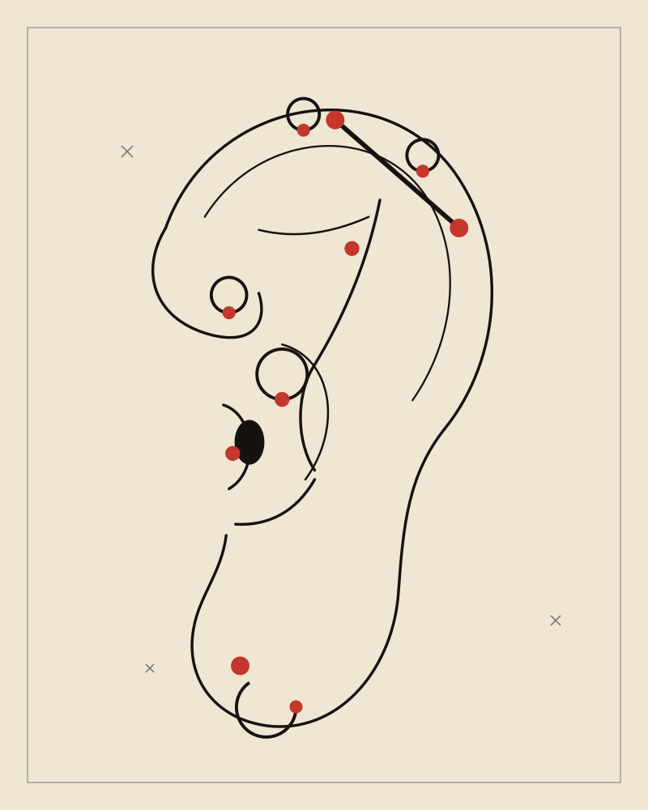
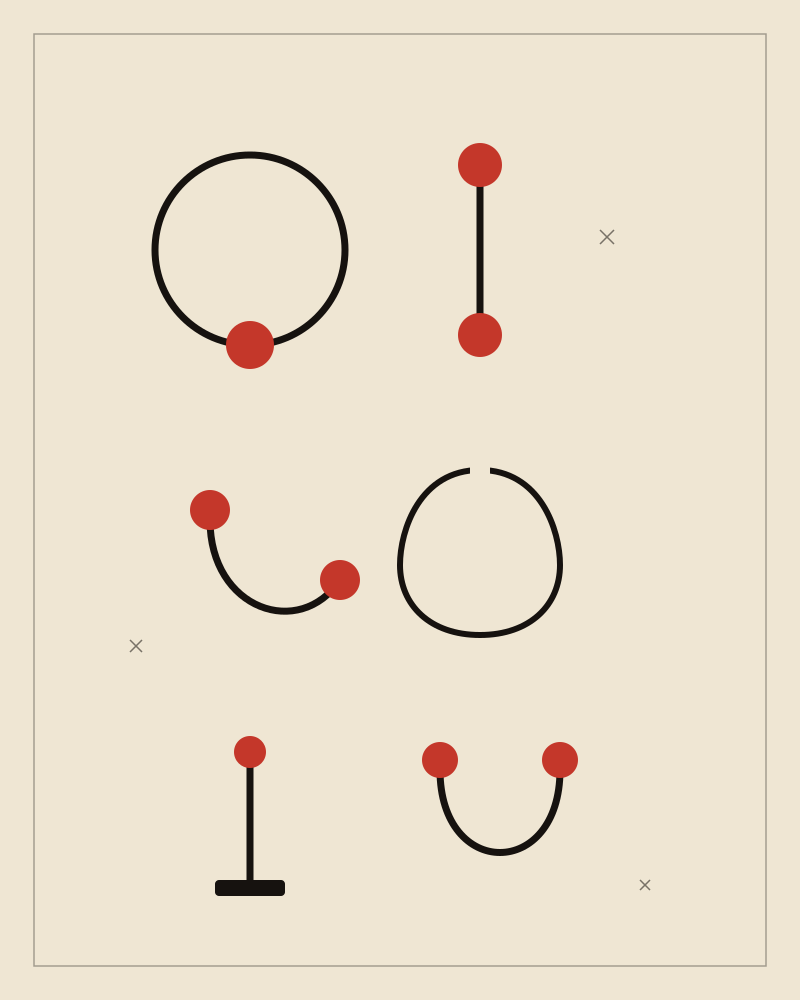

Ago sterile, gioielli in titanio
Piercing
Orecchio, viso e corpo: ago sterile monouso, gioielli in titanio e tutto il tempo per scegliere la posizione giusta.

Come lavoriamo
Con l’ago,
Con l’ago,
mai con la pistola.
Ogni piercing si fa con un ago cavo sterile, aperto davanti a te e buttato subito dopo. È più preciso e più delicato della pistola, che sulla cartilagine non va mai usata. Prima guardiamo insieme la forma dell’orecchio o del viso e scegliamo il punto che ti sta meglio.
- 01Ago sterile monousoAperto davanti a te, uno per ogni piercing.
- 02Gioielli in titanioTitanio implantare (ASTM F136), adatto anche alle pelli sensibili.
- 03Controllo inclusoDopo qualche settimana si accorcia la barretta, se serve.
Dove
Orecchio, viso, corpo.
I tempi di guarigione sono indicativi: dipendono dalla zona, dalla pelle e da come lo curi.
Orecchio
- Lobo6 – 8 settimane
- Helix6 – 12 mesi
- Tragus6 – 12 mesi
- Conch6 – 12 mesi
- Rook e daith6 – 12 mesi
- Industrial6 – 12 mesi
Viso
- Narice4 – 6 mesi
- Septum2 – 3 mesi
- Sopracciglio2 – 3 mesi
- Labbro (labret)2 – 3 mesi
- Lingua4 – 6 settimane
Corpo
- Ombelico6 – 12 mesi
- Capezzolo6 – 12 mesi

Dopo il piercing
Pochi gesti,
Pochi gesti,
ogni giorno.
- Lava due volte al giorno con soluzione fisiologica sterile, poi asciuga tamponando con carta pulita.
- Non girare e non toccare il gioiello con le mani sporche.
- Niente mare, piscina e sauna per le prime settimane.
- Non cambiare gioiello finché il piercing non è guarito: lo cambiamo noi in studio.
- Per orecchio e cartilagine evita di dormirci sopra; per labbro e lingua sciacqua la bocca dopo i pasti.
Minorenni: sotto i 18 anni serve il consenso di un genitore, presente in studio con un documento.
Hai scelto il punto?
Scrivici quale piercing vorresti: ti diciamo come prepararti.